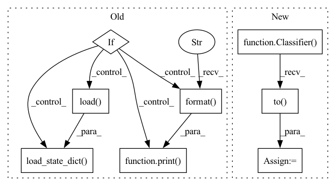

Pattern ID :15079

Before Change
checkpoint = torch.load(logger.get_checkpoint_path("best"), map_location="cpu")
classifier.load_state_dict(checkpoint)
if args.phase == "test":
acc1 = validate(test_loader, classifier, args)
print(acc1)
return
// compute relationship
relationship_path = args.relationship
if not os.path.exists(relationship_path):
r = Relationship(determin_train_loader, val_loader, classifier)
relationship = r.get_relationship(direct=args.direct)
np.save(relationship_path, relationship)
else:
relationship = np.load(relationship_path)
// start training
best_acc1 = 0.0
for epoch in range(args.epochs):
// train for one epoch
train(train_iter, classifier, optimizer,
epoch, relationship, args)
lr_scheduler.step()
// evaluate on validation set
acc1 = validate(val_loader, classifier, args)
// remember best acc@1 and save checkpoint
torch.save(classifier.state_dict(), logger.get_checkpoint_path("latest"))
if acc1 > best_acc1:
shutil.copy(logger.get_checkpoint_path("latest"), logger.get_checkpoint_path("best"))
best_acc1 = max(acc1, best_acc1)
print("best_acc1 = {:3.1f}".format(best_acc1))
// evaluate on test set
classifier.load_state_dict(torch.load(logger.get_checkpoint_path("best")))
acc1 = validate(test_loader, classifier, args)
print("test_acc1 = {:3.1f}".format(acc1))
logger.close()
After Change
print("=> using pre-trained model "{}"".format(args.arch))
backbone = models.__dict__[args.arch](pretrained=True)
num_classes = train_dataset.num_classes
classifier = Classifier(backbone, num_classes, head_source=backbone.copy_head()).to(device)
// define optimizer and lr scheduler
optimizer = SGD(classifier.get_parameters(args.lr), momentum=args.momentum, weight_decay=args.wd, nesterov=True)
lr_scheduler = torch.optim.lr_scheduler.MultiStepLR(optimizer, args.lr_decay_epochs, gamma=args.lr_gamma)
// resume from the best checkpoint
if args.phase == "test":
checkpoint = torch.load(logger.get_checkpoint_path("best"), map_location="cpu")
classifier.load_state_dict(checkpoint)
acc1 = validate(val_loader, classifier, args)
print(acc1)
return
// build relationship between source classes and target classes
relationship = Relationship(determin_train_loader, classifier, device, os.path.join(logger.root, args.relationship))
co_tuning_loss = CoTuningLoss()
// start training
In pattern: SUPERPATTERN
Frequency: 3
Non-data size: 8
Instances
Fragment ID: 50876713
Project Name: thuml/transfer-learning-library
Commit Name: d2d33527cdc174b9ef6dd2644337e3e3e50028ac
Time: 2021-03-10
Author: 13126830206@163.com
File Name: examples-ft/classification/co_tuning.py
M Class Name: AnonimousClass
N Class Name: AnonimousClass
M Method Name: main(1)
N Method Name: main(1)
M Parent Class:
N Parent Class:
M File Name: examples-ft/classification/co_tuning.py
N File Name: examples-ft/classification/co_tuning.py
M Start Line: 33
M End Line: 132
N Start Line: 30
N End Line: 100
'>
Before Change
print("=> using pre-trained model "{}"".format(args.arch))
num_classes = train_dataset.num_classes
backbone_q = models.__dict__[args.arch](pretrained=True)
if args.pretrained:
print("=> loading pre-trained backbone from "{}"".format(args.pretrained))
pretrained_dict = torch.load(args.pretrained)
backbone_q.load_state_dict(pretrained_dict, strict=False)
classifier_q = Classifier(backbone_q, num_classes, projection_dim=args.projection_dim)
if args.pretrained_fc:
print("=> loading pre-trained fc from "{}"".format(args.pretrained_fc))
pretrained_fc_dict = torch.load(args.pretrained_fc)
After Change
classifier_q.projector.load_state_dict(pretrained_fc_dict, strict=False)
classifier_q = classifier_q.to(device)
backbone_k = utils.get_model(args.arch)
classifier_k = Classifier(backbone_k, num_classes, pool_layer=pool_layer).to(device)
bituning = Bituning(classifier_q, classifier_k, num_classes, K=args.K, m=args.m, T=args.T)
// define optimizer and lr scheduler
'>
Fragment ID: 50876715
Project Name: thuml/transfer-learning-library
Commit Name: 052625393790ff6b5ffcffb9f29a68670054ea93
Time: 2021-08-01
Author: 13126830206@163.com
File Name: examples/finetune/image_classification/bi_tuning.py
M Class Name: AnonimousClass
N Class Name: AnonimousClass
M Method Name: main(1)
N Method Name: main(1)
M Parent Class:
N Parent Class:
M File Name: examples/finetune/image_classification/bi_tuning.py
N File Name: examples/finetune/image_classification/bi_tuning.py
M Start Line: 45
M End Line: 84
N Start Line: 45
N End Line: 95
'>
Before Change
// create model
print("=> using pre-trained model "{}"".format(args.arch))
backbone = models.__dict__[args.arch](pretrained=True)
if args.pretrained:
print("=> loading pre-trained model from "{}"".format(args.pretrained))
pretrained_dict = torch.load(args.pretrained)
backbone.load_state_dict(pretrained_dict, strict=False)
num_classes = train_dataset.num_classes
classifier = Classifier(backbone, num_classes).to(device)
bss_module = BatchSpectralShrinkage(k=args.k)
After Change
print("=> using pre-trained model "{}"".format(args.arch))
backbone = utils.get_model(args.arch, args.pretrained)
pool_layer = nn.Identity() if args.no_pool else None
classifier = Classifier(backbone, num_classes, pool_layer=pool_layer, finetune=args.finetune).to(device)
bss_module = BatchSpectralShrinkage(k=args.k)
// define optimizer and lr scheduler
optimizer = SGD(classifier.get_parameters(args.lr), momentum=args.momentum, weight_decay=args.wd, nesterov=True)
lr_scheduler = torch.optim.lr_scheduler.MultiStepLR(optimizer, args.lr_decay_epochs, gamma=args.lr_gamma)
// resume from the best checkpoint
if args.phase == "test":
checkpoint = torch.load(logger.get_checkpoint_path("best"), map_location="cpu")
classifier.load_state_dict(checkpoint)
acc1 = utils.validate(val_loader, classifier, args, device)
print(acc1)
return
// start training
best_acc1 = 0.0
for epoch in range(args.epochs):
print(lr_scheduler.get_lr())
// train for one epoch
train(train_iter, classifier, bss_module, optimizer, epoch, args)
lr_scheduler.step()
// evaluate on validation set
acc1 = utils.validate(val_loader, classifier, args, device)
// remember best acc@1 and save checkpoint
torch.save(classifier.state_dict(), logger.get_checkpoint_path("latest"))
'>
Fragment ID: 50876716
Project Name: thuml/transfer-learning-library
Commit Name: 052625393790ff6b5ffcffb9f29a68670054ea93
Time: 2021-08-01
Author: 13126830206@163.com
File Name: examples/finetune/image_classification/bss.py
M Class Name: AnonimousClass
N Class Name: AnonimousClass
M Method Name: main(1)
N Method Name: main(1)
M Parent Class:
N Parent Class:
M File Name: examples/finetune/image_classification/bss.py
N File Name: examples/finetune/image_classification/bss.py
M Start Line: 46
M End Line: 100
N Start Line: 46
N End Line: 86